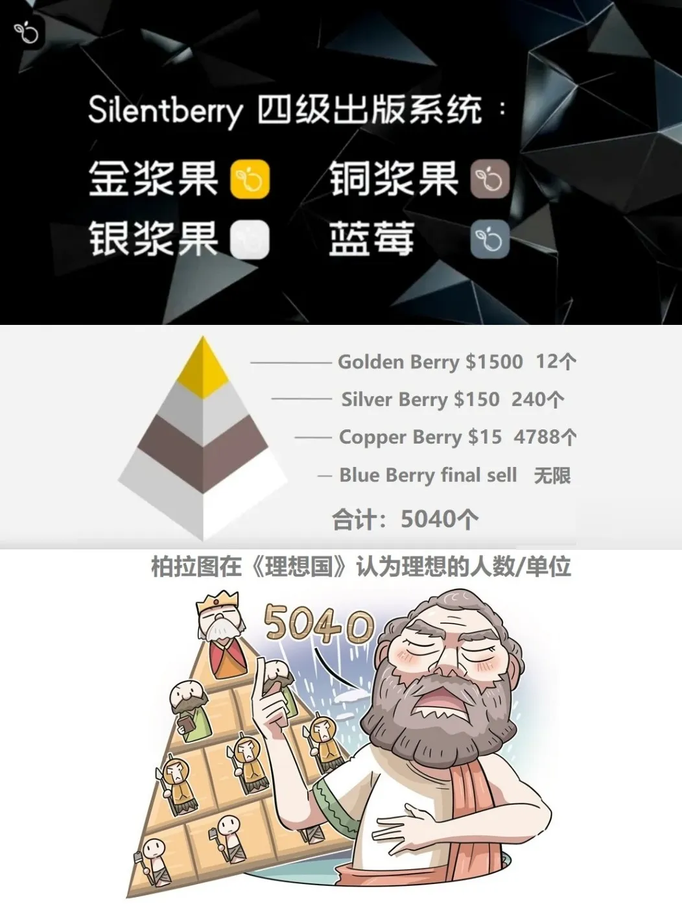

新的一年，马上为社区Seed 及 SNS成员赠上专属白名单福利
2025年1月3日，是比特币创世块在芬兰·赫尔辛基挖出的16周年纪念日；当天也是比特币链上去中心化出版平台 SilentBerry 将首度公开发售著名历史学者秦晖教授 NFT Book 中文版 (金、银、铜浆果等三种“股东”NFT)
SilentBerry 是一家注册在芬兰的出版社，出版书籍语言不限华语，后续也将考虑出版英文、芬兰语、韩语和日语书籍等。

第一轮发售 金、银、铜浆果 三种NFT，时间：1月3日 东八区 中午12点
NFT购买者专属福利：不仅获得电子书及书籍打印权各一，还将自动成为项目的"股东"，享有书籍销售分配收益。
第二轮发售「蓝莓」，类似传统的图书销售，时间在二月初。


（2025年1月3日 9:00~12:00 UTC+8）
白名单地址收集表 将有专人发布在社区Seed通知群组与SNS共建者群，截止日期1月2日东八区晚上12点。